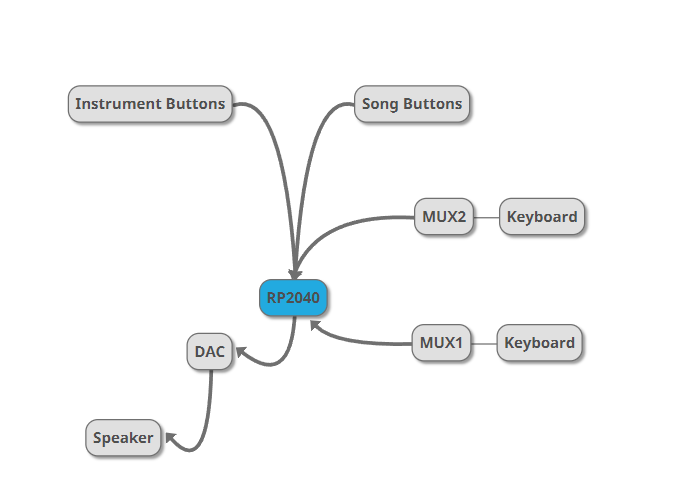

Overview - Rationale
While brainstorming ideas and learning about different projects done in the past, we were in awe of the remarkable sounds that can be produced by synthesis on a microcontroller. Inspired by the first laboratory assignment on Direct Digital Synthesis, we were keen to use audio synthesis principles to create music. After exploring different kinds of synthesis, we settled on using FM synthesis, and were amazed to find how closely it mirrored the sound of a real mechanical instrument sound digitally. We initially used FM synthesis to model piano sounds, detecting key presses on the physical keyboard. Eager to harness the vast potential of FM synthesis, and expand our applications, we chose to even incorporate multiple kinds of sounds. Several iterations of tuning culminated in a single device capable of sounding like three completely different instruments - a harp, bells, and a grand piano, all in one - something that even a real mechanical instrument cannot do!
Building upon existing synthesis functionality, we created a general purpose MIDI synthesizer and integrated this into RPiano, making it now capable of synthesizing any available MIDI file. This made our device instantly compatible with millions of existing files with no additional processing. From playing a limited variety of painfully pre-encoded tunes, we could now play anything from pop music to Mozart’s symphonies! Our last step was integration to facilitate playing the physical keyboard and playing a MIDI file simultaneously. This way, an existing MIDI file could be used to accompany a user’s playing on the keyboard. This extends our functionality to even playing duets, allowing synthesizing complicated arrangements that cannot be played by just an individual player.
Logical Structure
At a high-level, our project structure is shown in the following block diagram. There are 3 different types of inputs: Physical key presses, song button presses, and instrument button presses. Each of these modify either the notes to be played (stored in the notes buffer), or the parameters used in FM synthesis. The FM Synthesis generates a final output wave that is sent to the speakers through the DAC.

Hardware
Our entire circuit can be seen in Appendix C: Circuit Diagram. Also see Background for more information on how our keys detect keypresses, and multiplexers switch between channels. This is a simplified diagram of our circuit:
We used two 16x1 analog muxes to read input from 29 metal keys to detect human input. We further used three buttons to select instruments, and five to play or stop songs. Each button used an internal pullup resistor, while the analog inputs used an external resistor. We used a digital analog converter (DAC) to output signal to a pair of speakers.
We used keytops from an old piano as the base for our keys. The black keys were wrapped in aluminum foil, and we used copper tape on the white keys. After securing a wire to each key, they were ready to be connected to the muxes. We made all of our connections on breadboards to ease prototyping, but they could be directly soldered for more reliable connections. We built the keyboard on a cardboard box, with the electronics inside.
We used standard desktop speakers for output. It was important that the speakers have their own power source since the RP2040 and DAC are incapable of providing the current required to play music at our desired volume.
Software
Implementation
The software implementation is split into several protothreads, each handling individual parts of the program logic. Our main software design has 3 main components:
(i) FM synthesis computation to send the wave value through the DAC to the speakers.
(ii) User input detection: Reading the multiplexer inputs to check which keys are pressed on the physical keyboard Detecting button presses for playing songs Detecting button presses for adjusting the instrument type
(iii) Playing songs: Song notes to be pressed and released based on stored metadata for selected song
Another piece of software separate from the main code is the Python code to parse a chosen midi file, and store it in the required format in program memory.
Synthesis
The core FM synthesis is done in an interrupt service routine, computing values for the final wave output that is sent to the speakers through the DAC. Our implementation for the FM synthesis builds upon a reference example (linked in appendix). The computation logic is described in further detail in the FM Synthesis concept section, and the implementation can be found in the compute_sample method in the code (linked in appendix).
Computing all DAC values for all the notes at different frequencies at once would require too much memory. Thus, the DAC values are computed in real-time, and written to the DAC each time the interrupt service routine is run. For reliable sound output, the DAC needs to be written to at a high frequency, making it essential for a new DAC value to be ready every interval. Through experimentation, we arrived at an optimal time interval value of 36 microseconds, large enough to leave sufficient time for completing required computations but small enough that the sound output is smooth and pleasant to the human ear without any distortions. This corresponds to an output sampling frequency value of ~27.7kHz.
The efficiency of our design depended heavily on optimizing the ISR to be as fast as possible, ensuring that a new DAC value was ready every 36 microseconds, without running out of time in the ISR before the next value needed to be completed. To play any MIDI file, our implementation needed to support playing any note in the entire range of the piano (88 keys). Additionally, whether the note is pressed (and needs to be included in the output wave) is controlled by an external input choice (physical keys, or choice of song), and constantly updated by external threads. Checking all 88 keys in the interrupt service routine to see if they are pressed and then computing the required waveform for the frequency corresponding to the key took up too much time, and led to the ISR running out of time before completion, causing distorted sounds being produced.
We approached this problem by adding a buffer for notes that was capable of holding 10 unique notes at a time. This way, each time a note needs to be played (either on detecting a physical key press on the keyboard or a note play event in the song), its note number is added to the buffer. The Interrupt Service Routine now only loops through the 10 notes in the buffer, checking whether they are pressed or not, and then including it in the synthesis computation. There is also another FM synthesis control thread which sequences the synthesis ISR, precomputing fixed point constants to make the ISR faster.
The buffer is implemented using an array, with each element in the array contained in order sorted with respect to when it was added to the buffer. When the buffer is full and a new note needs to be added, the least recently pressed key is removed from the tail end and the new key is added at the front.
The size of the buffer is a configurable parameter that can be changed based on the number of unique voices needed to be played at the same time. The tradeoff of making the buffer too large would be, however, a lower sampling frequency due to the increase in computation time in the interrupt service routine to handle computations for a larger number of notes at the same time.
Physical Key Presses
Detecting the physical key press is handled by the protothread readmux. This thread handles reading the multiplexer inputs through the ADC, by changing the select lines used to access each input of the mux. For a total of 29 keys on the physical keyboard, we use two 16-input muxes, using ADC pins 27, and 28. The adc_read() function is used to read the input values, switching between the two ADC pins by setting the input corresponding to the pin using ADC_select_input().
The value read from the ADC is converted to a voltage value using a conversion factor constant defined. We defined a voltage cutoff constant, and the press was detected by checking if the resultant value read was lower than the specified voltage cutoff value. Through experimentation with our physical setup, we determined a value of 1.2 V for the voltage cutoff.
If the key press was detected, the note corresponding to the key was set to be pressed. In order to prevent detecting a single key press twice, we also stored a previously pressed boolean value, and the note press was only set if the key was detected to be pressed and was previously not pressed. Additionally, the current state of the key was stored, so that it would be considered “released” in the synthesis computation only when the finger was lifted. This enabled storing information to lengthen the sound produced based on how long it was pressed for.
Button Presses
Detecting the physical button press is handled by the protothread buttonpress. This thread checks to see if each of the 5 buttons corresponding to the songs have been pressed by reading the GPIO pin of the button. On detecting a press, it sets a global variable holding the chosen song to contain the song data corresponding to the song button. It also enables pausing the song if the song is currently playing or starting to play the song if it is not currently playing.
The same thread is also used to detect the instrument button presses. If pressed, the parameters of the FM synthesis are changed to be the values tuned for the instrument corresponding to the instrument. These parameters are global variables and are accessed by the interrupt service routine for synthesis, generating modified sounds based on the parameter changes.
Parsing MIDI File
As explained in more detail in the concepts section, the MIDI format consists of a list of events. While there is a standard format of parsing a MIDI file by reading the bytes stored based on the specified format, on further research we found existing python libraries that parse this into a more easily readable format.
We chose to use an existing library to parse this information instead of interacting with the MIDI file by reading each byte. Using the MIDO library in Python (referenced in the appendix) we wrote a script, read_midi.py, to read in any MIDI file and store required data to play the song on our synthesizer. The script takes in the path of the MIDI file as an input, prompts the user to choose a track contained within the midi file, and then parses sequence of midi events corresponding to the particular track selected.
We chose to represent each midi event read (corresponding to the press or release of a note) as a C struct, containing 3 fields - the note to press, the note to release, and the hold time, i.e. the time to wait before performing this event. The hold time stored is a relative value, and is converted to a time in milliseconds by multiplying by a constant conversion factor. Storing this time-based information enabled us to store very concisely enough data to reproduce the song’s exact rhythm, playing style, adhering to different elements of music like rests, and note values, i.e. how long each note is played), as well as the pitch, i.e. the frequency of the note.
After reading all events, the script accumulates a list of events, writing this in the form of a list of C structs (song_data) to the song.c file which is then imported in the main code and the data is stored in program memory. This is done by making use of the csnake python library (referenced in Appendix) to convert a list in python to the C struct format.
Playing Song
Playing the song in the main code is handled in another protothread, playsong. This thread loops through all songs to check if the button has been pressed to play them. On finding a value set to true for playing a song, the thread iterates through each event in the song data corresponding to the chosen song (set by the thread detecting the song button press).
Before each event, it first calculates the hold time in milliseconds from the relative value stored. This is done by multiplying a delay tick value, 1000ms, by a constant conversion factor for the song. This conversion factor for the song can be changed to speed it up or slow it down. Then, if a note is to be added, it adds the note to the note buffer. If it is to be released, it sets the pressed boolean value for the note to be false.